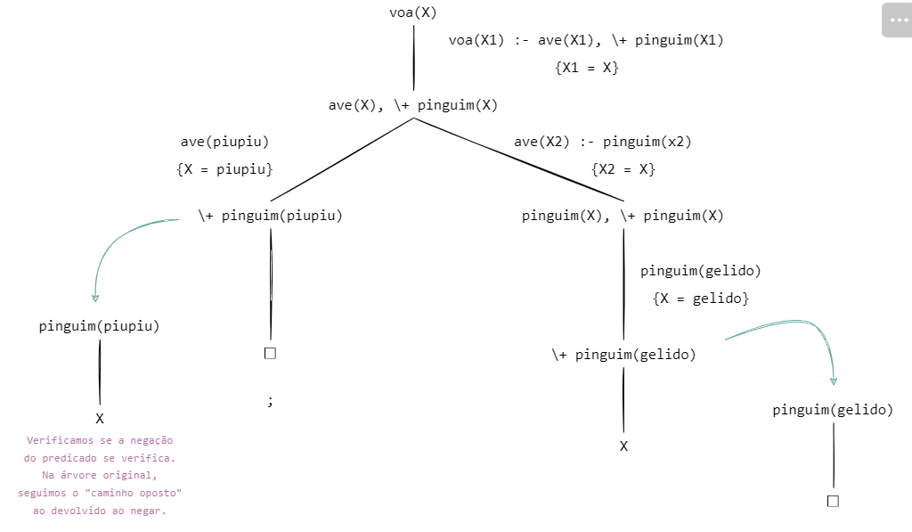

- Operador de Corte "!" é utilizado para indicar que, num programa onde um dado ramo produz soluções, devemos seguir esse ramo (algo do género "se já sabes que o que fizeste está bem, segue em frente.").
Tal como o `break` de outras linguagens, só deve ser utilizado quando estritamente necessário (e, quando utilizado, devidamente comentado), visto que pode alterar inadvertidamente a semântica declarativa do programa.
Veja o exemplo abaixo:
% remove_repetidos(L1, L2)
remove_repetidos([], []).
remove_repetidos([P|R], L) :-
membro(P, R), !, % caso seja membro, nem precisa de ir à cláusula seguinte
remove_repetidos(R, L).
remove_repetidos([P|R], [P|L]) :- remove_repetidos(R, L).
% a interação resultante é correta:
?- remove_repetidos([a,c,c,a,b,c], L).
L = [a,b,c].
- Falhando Forçado O predicado "fail/0" tem duas utilidades principais, sendo que apenas uma delas é vulgarmente utilizada.
O seu propósito é criar um nó falhado propositadamente.
O primeiro propósito, menos usual, é para obter todas as respostas a um objetivo de uma vez, em vez de ter de utilizar o ";" para verificar todas as respostas.
Podemos observar uma interação deste género abaixo:
?- membro(X,[1,2,3]), writeln(membro(X,[1,2,3])), fail.
membro(1,[1,2,3])
membro(2,[1,2,3])
membro(3,[1,2,3])
false.
% esta interação é realizada sem a necessidade de ;
% a interação resultante é correta:
% o próprio ; também não aparece
- O segundo propósito, mais utilizado e bastante poderoso, é utilizar o "fail"em conjunto com o operador de corte.
Um exemplo bastante simples para ilustrar a sua utilidade é o de verificar se duas listas são disjuntas -
duas listas são disjuntas quando não têm nenhum membro em comum, pelo que basta haver um para o objetivo retornar "false".
Assim sendo, é interessante combinar um operador de corte com um "fail", tal que:
% disjuntas(L1, L2)
disjuntas([], _) :- !.
disjuntas(_, []) :- !.
% caso seja membro, nem precisa de verificar mais, é falso de certeza
disjuntas([P1|_], L2) :-
member(P1, L2),
!, fail.
disjuntas([_|R1], L2) :- disjuntas(R1, L2).
- Negação A combinação mencionada acima, combinar o `fail` com o corte, permite definir a negação por falhanço ,
diferente da negação lógica. Esta negação é baseada na hipótese do mundo fechado, mencionada na introdução ao Prolog.
Se o Prolog não consegue derivar algo, assume que é falso.
Em Prolog, este tipo de negação é utilizado através de um meta-predicado, `\+`, aplicado a literais.
Observemos o exemplo:
membro(1,[1,2,3])
membro(2,[1,2,3])
membro(3,[1,2,3])
false.
% esta interação é realizada sem a necessidade de ;
% a interação resultante é correta:
% o próprio ; também não aparece
-
Este programa pode ser lido tal que "para responder ao objetivo `\+(P)`, tente-se provar P. Caso não seja possível, o objetivo é satisfeito;
caso contrário, retorne-se `false`".
Em relação a um exemplo concreto:
Em relação a um exemplo concreto:
voa(P) :- ave(P), \+ pinguim(P).
% P voa caso seja uma ave que não um pinguim
ave(gelido)./p>
ave(piupiu).
pinguim(gelido).
% interações possíveis
?- voa(gelido).
false.
?- voa(piupiu).
true.
?- voa(X).
X = piupiu ;
false.
A image abaixo é uma ilustração da interação acima:

A negação por falhanço não funciona, contudo,
corretamente para objetivos não chãos (ou seja, para objetivos com variáveis).
- Execução Forçada: Apesar de teoricamente uma regra ter o formato "< literal > :- < literais >", podemos supor a hipótese de " literal " ser "nada". A regra ficaria, então, com um aspeto do género :-
< literais >, algo do género "para provar "nada", prove os literais a seguir a ":-". Pode ser bastante útil em casos de tentar fazer debug (i.e :- writeln('Este é o passo < n > do programa')),
ou até mesmo para definir certos acontecimentos que acontecem sempre ao carregar um certo ficheiro no Prolog
Por exemplo, se utilizarem a GUI do SWI-Prolog, podem ir às definições e ao "user init file " e escrever alguns comandos que serão forçosamente executados, como por exemplo:
% dark mode
:- use_module(library(theme/dark)).
% mensagem ao entrar - deverão ver isto ao abrir o SWI-Prolog
:- writeln('This is a test!').
% se estiverem na vossa diretoria default e quiserem abrir x ficheiros
% pode ser útil no projeto para não andarem sempre a abrir o ficheiro
:- []..